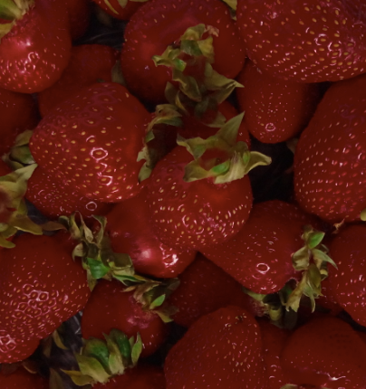

The
Garden

Far away, for the Faithful Ones, is a Sacred Place.
And on the Way to that Promise are the Gardens.
This is the First Garden.
There are Five Gardens; each larger than the last.
You can be the Green of the Gardens and you can help them grow.
To help the Garden grow:
Best of all is to follow the teachings.
You may also invite those Dear to you to the Garden.
You may also share translations, adaptations, or creations inspired by these writings.
And you may also send questions, comments, and corrections.